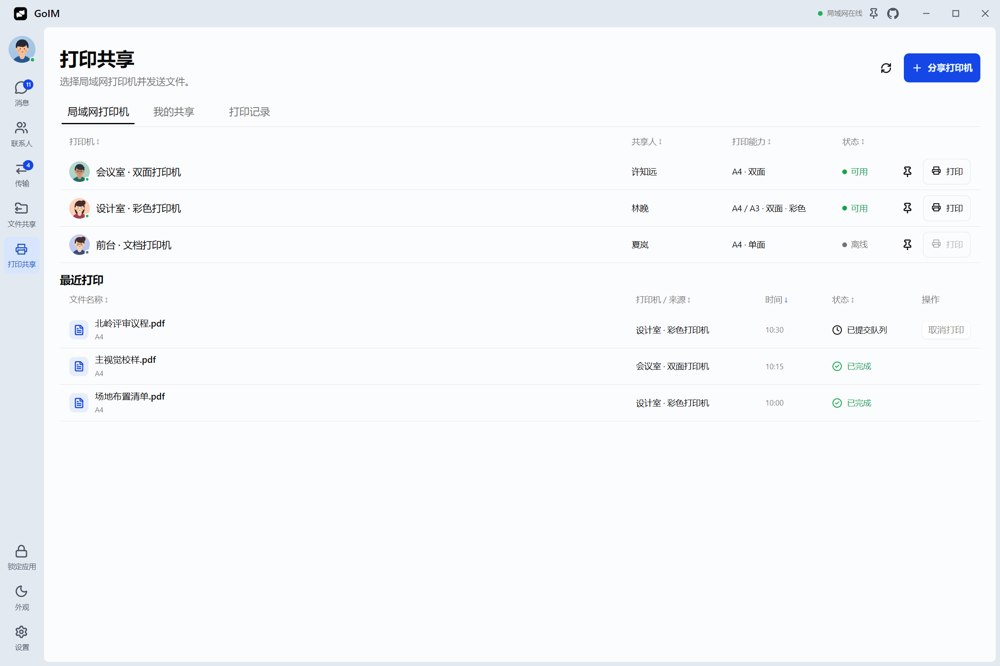

浏览器文件共享
把一个文件夹发成链接
对方在同一局域网用浏览器打开，就能浏览目录、下载文件。开启设备主页后，也可以拖入文件上传给你。
打开 GoIM，找到同一网络里的同事。发消息、传文件、共用打印机，聊天记录留在自己的电脑上。

从聊天附件到公共资料，再到办公室的打印机。
浏览器文件共享
对方在同一局域网用浏览器打开，就能浏览目录、下载文件。开启设备主页后，也可以拖入文件上传给你。

打印机共享
从列表挑一台在线打印机，查看纸张、彩色和双面能力，再提交文件。打印进度和历史记录都在同一页。
在「联系人」中找到在线设备。自动发现受限时，可点「手动连接」输入对方的 IP。
打开会话发送文字或图片，也可以发起语音通话。
在会话里添加附件。对方可在聊天或「传输」里接收、另存并查看进度。
同一局域网内，两台设备打开 GoIM 即可相互发现并直接通信。聊天记录保存在各自电脑上。
在「文件共享」里添加文件或文件夹，然后把链接或二维码发给对方。对方用浏览器打开即可下载，需要时可以给分享设置访问密码。
GoIM 会按对端自动选择协议。不同客户端支持的操作有所区别，兼容表逐项标注了验证版本和测试结果。 查看兼容表